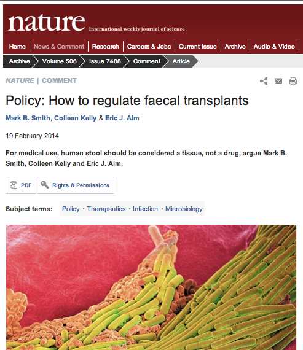
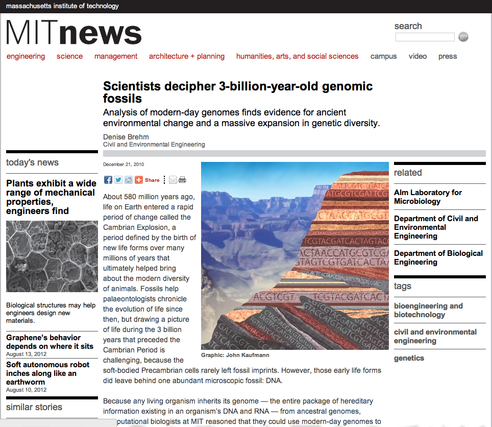
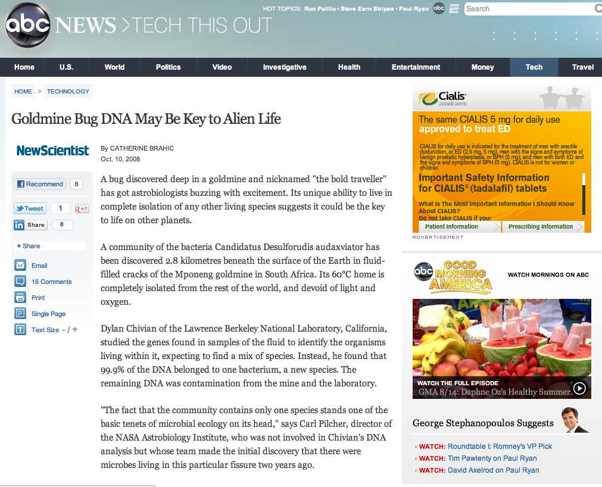

Home
News
Publications
Software
People
Contact Us
alm lab
News
Feb 19, 2014 (Nature)
Policy: How to regulate faecal transplants.

Feb 17, 2014 (New York Times)
A New Kind of Transplant Bank.
Jul 24, 2012 (MIT News)
DARPA, NIH to fund 'human body-on-a-chip' research.
Jun 14, 2012 (Boston Globe)
Researchers put selves under the microscope.
May 4, 2012 (Scientific American)
Probiotics may endow rodents with "mouse swagger".
Apr 5, 2012 (MIT News)
Study shows unified process of evolution in bacteria and sexual eukaryotes.
Oct 31, 2011 (MIT News)
Bacteria may readily swap beneficial genes.
Dec 21, 2010 (MIT News)
Scientists decipher 3-billion-year-old genomic fossils.

Oct 10, 2008 (ABC News)
Goldmine bug DNA may be key to alien life.
